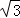
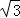

2014年北京市中考数学试题 · 数学解答题 第16题 · 对应解析
16．（5分）（2014•北京）已知x﹣y=

，求代数式（x+1）2﹣2x+y（y﹣2x）的值．考点： 整式的混合运算—化简求值．菁优网版权所有
分析： 先把代数式计算，进一步化简，再整体代入x﹣y=，求得数值即可．
解答： 解：∵x﹣y=

，∴（x+1）2﹣2x+y（y﹣2x）
=x2+2x+1﹣2x+y2﹣2xy
=x2+y2﹣2xy+1
=（x﹣y）2+1
=（）2+1
=3+1
=4．
点评： 此题考查整式的混合运算与化简求值，注意先化简，再整体代入求值．